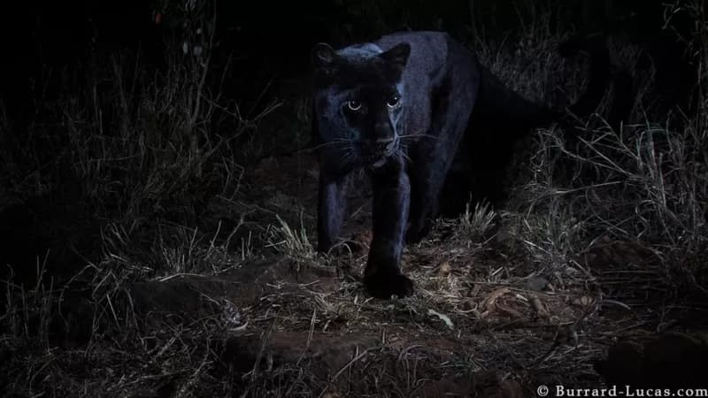
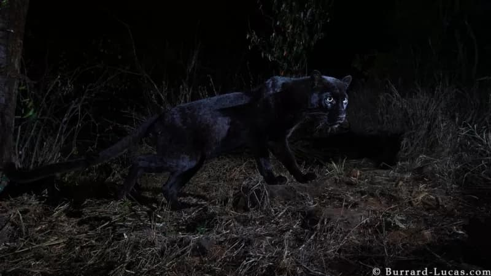
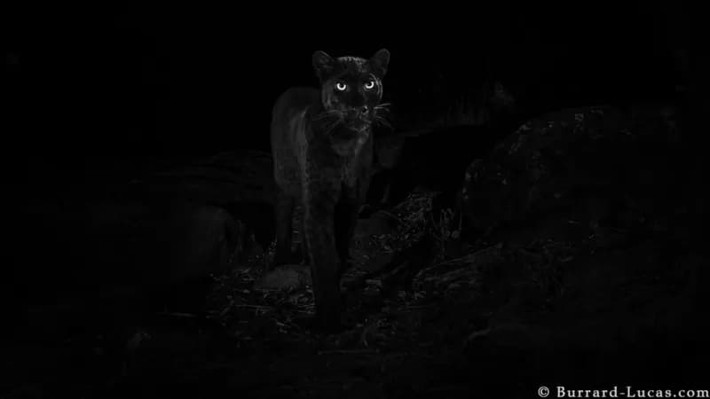
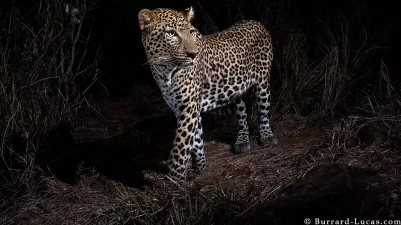
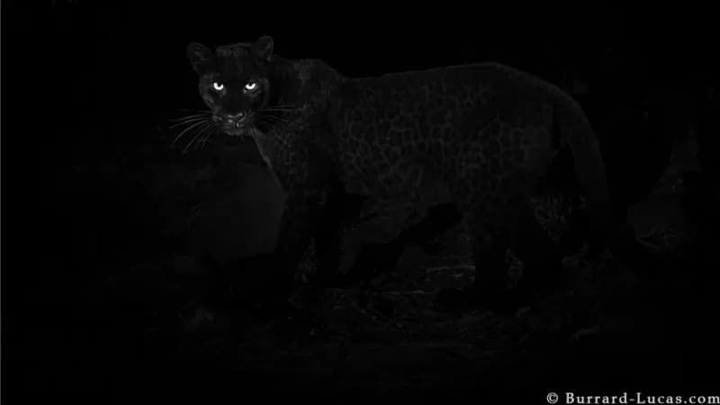

В Кении обнаружена редчайшая черная пантера. Впервые за 100 лет ее удалось сфотографировать
Камерон Вирк
Би-би-си
11 февраля 2019
Подобных леопардов в Африке не видели около 100 лет
Черная пантера - животное чрезвычайно редкое, в особенности в Африке. Здесь их никто не видел уже около 100 лет - но фотографу Уиллу Иеррарду-Лукасу это удалось.
Черной пантерой называют либо леопарда, либо ягуара с черной шкурой. На свете очень мало фотографий этих животных. Когда Уилл услышал, что в заповеднике Лакипия в Кении кто-то якобы видел черную пантеру, он немедленно отправился туда.
Судя по всему, этому леопарду около двух лет
Уилл и его гид по имени Стив шли по следам пантеры и выбрали хорошее, по их мнению, место для установки камеры-ловушки, которая автоматически включается, когда кто-то проходит мимо нее.
"Я часто устанавливаю такие камеры, и уже привык к тому, что часто ничего не получается, потому что никогда не знаешь, пройдет ли мимо то самое животное, которое хочется сфотографировать", - говорит Уилл.
К тому же ни он, ни Стив не знали, шли ли они действительно по следам черной пантеры - это мог быть и обычный леопард. Но на четвертую ночь им повезло.
Уилл надеется вновь сфотографировать черного леопарда
"Я даже не сразу понял, что это свершилось. Обычно из-за вспышки животное хорошо видно, а тут я заметил лишь светящиеся в темноте глаза", - сказал Уилл.
Обнаруженная им черная пантера оказалась мужского пола. Судя по размерам, этому леопарду около двух лет.
Слухи о черных пантерах в этом районе Кении ходят давно, но впервые почти за 100 лет их удалось сфотографировать. Кроме того, насколько известно, африканские черные пантеры живут лишь в этом районе Кении.
В темноте были видны лишь глаза пантеры
Уилл оставил свои камеры в заповеднике в надежде еще раз сфотографировать черного леопарда - но сам не верит, что у него получится.
"К этому возрасту их обычно прогоняют более крупные взрослые леопарды, так что им приходится разыскивать свою собственную территорию", - говорит он.
Как появляются черные пантеры?
Некоторые считают черных пантер отдельным видом кошачьих, но это не так.
"Их шкура становится черной из-за меланизма - избытка темного пигмента в ткани животного. То же самое происходит и с домашними кошками", - говорит Уилл.
Это как бы альбинизм наоборот.
Черная пантера - это просто большая кошка с почерневшей шкурой. В Азии и Африке это леопарды. В Южной Америке - пумы.
Для того, чтобы леопард родился черного цвета, необходимо, чтобы у обоих родителей был рецессивный ген меланизма.
Возможный отец черной пантеры
Неизвестно, сколько черных пантер живет в Африке - это ночные животные, избегающие встреч с людьми